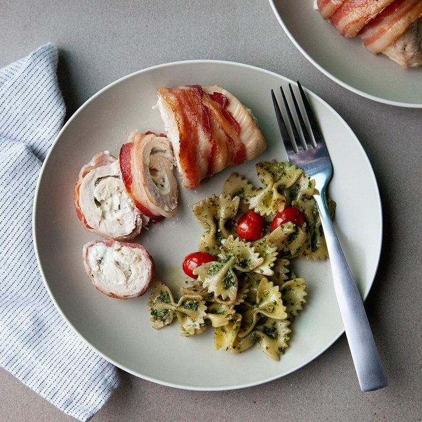

Bacon-Chicken Recipe

Bacon Chicken
Tangy baked bacony chicken breasts. Just three ingredients prove that three IS a magic number! Make Bacon Chicken magic tonight. This recipe is a favorite among my family. We got it from my step-father, who was an awesome cook. Serve with macaroni and cheese and tater tots or French fries, if desired.
Ingredients:
- 4 skinless, boneless chicken breast halves
- 1 (18 ounce) bottle honey barbecue sauce
- 1 pound sliced bacon
Directions:
- Preheat oven to 350 degrees F (175 degrees C).
- Wash chicken and pat dry, then place in a 9x13 inch baking dish. Smother chicken with 1/2 of the barbecue sauce, then layer bacon slices cross-ways on top. Pour remaining 1/2 of barbecue sauce over all.
- Bake at 350 degrees F (175 degrees C) for about 45 minutes or until chicken is cooked through and juices run clear. Serve one chicken breast per person with just the crispy, top pieces of bacon.